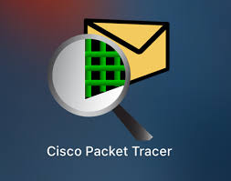

| Sub modulo 1: Comunidades virtuales |
Uso de redes sociales como comunidades virtuales. Durante la capacitación aprendimos a utilizar plataformas como Facebook, Instagram y YouTube no solo como medios de comunicación, sino como comunidades virtuales para compartir ideas, interactuar con audiencias y promover proyectos. Exploramos cómo crear contenido atractivo, utilizar hashtags, programar publicaciones y analizar estadísticas para mejorar el alcance. También aprendimos a promocionar productos, servicios o ideas a través de estrategias básicas de marketing digital. |
| Submodulo 2: Matenimiento y Redes de computo |
Mantenimiento y redes con Cisco Packet Tracer. Durante la capacitación aprendimos a realizar el mantenimiento básico de nuestros equipos de cómputo, incluyendo limpieza física, revisión de componentes internos, diagnóstico de fallas y buenas prácticas para prolongar la vida útil del hardware. Además, exploramos los fundamentos de redes informáticas utilizando Cisco Packet Tracer, una herramienta que nos permitió simular conexiones de red, configurar routers y switches, y entender cómo se transmite la información entre dispositivos de manera segura y eficiente. |